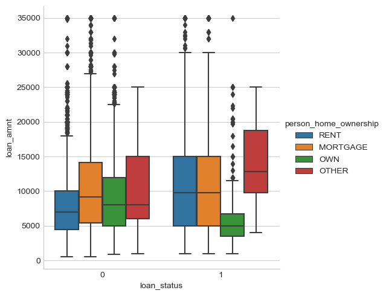
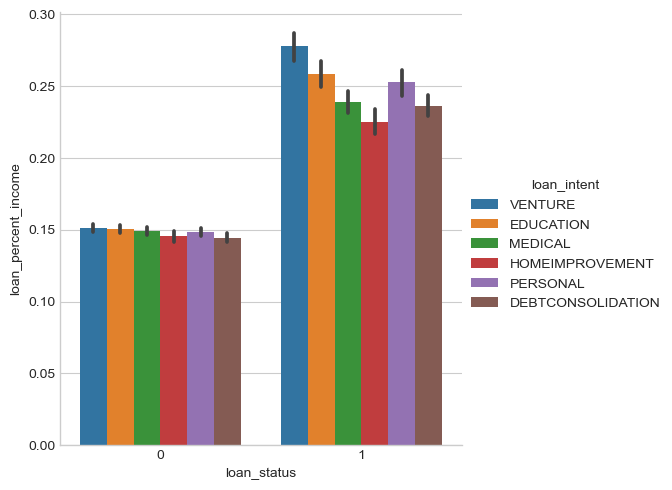
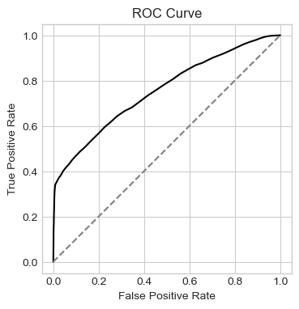
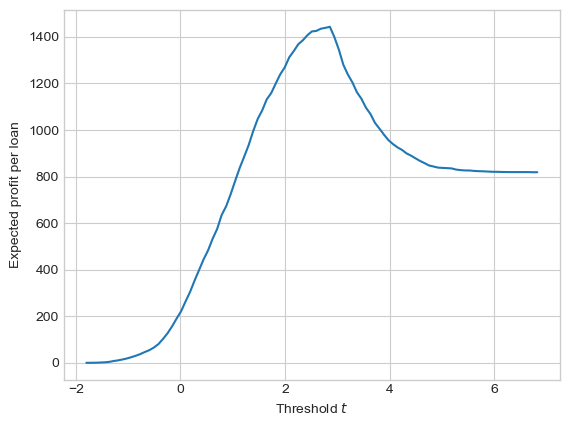
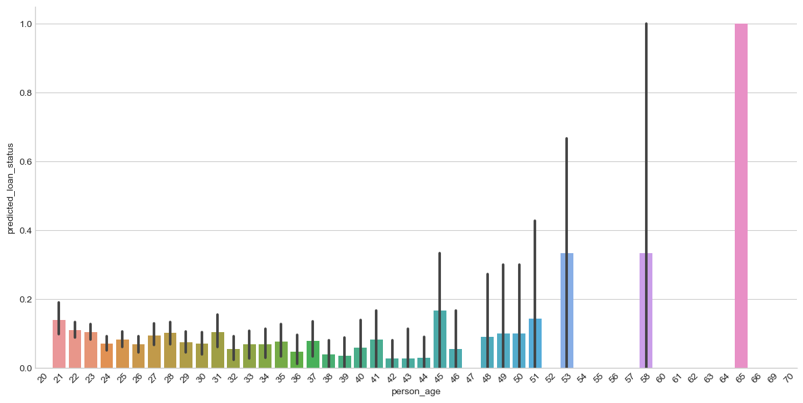
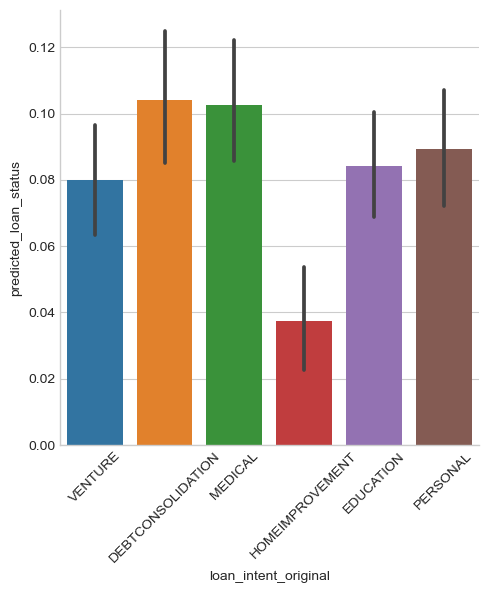
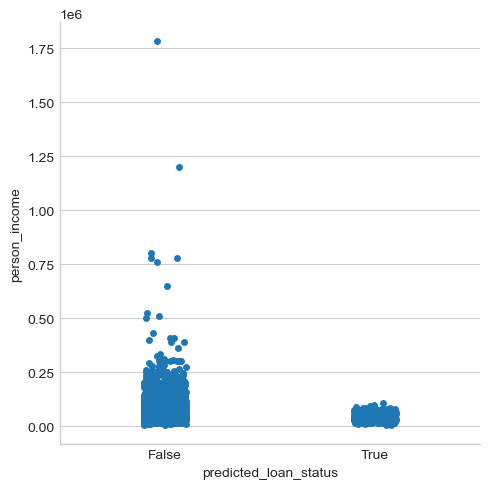

import pandas as pd
url = "https://raw.githubusercontent.com/PhilChodrow/ml-notes/main/data/credit-risk/train.csv"
df_train = pd.read_csv(url)‘Optimal’ Decision-Making
Introduction
In this blog post I trained a Logistic Regression function to predict the outcome of a loan. Through iterative comparison, I found that age, loan percent income, and person home ownership were the optimal features to predict loan status. Using these features to train my model, I then measured the optimal threshold by finding the highest possible gain for the bank. For these calculations I used the cost functions given by Professor Phil that depend on interest rate and loan amount. I then evaluated my model to see how the predictions changed based on different characteristics and calculated fairness based on my chosen definition.
I found that the bank stood to gain $7931919.35735091 in total, or $1384.0375776218652 per loan. This was based on an optimal threshold of 2.857653939857805. My trained model predicted that older people and people with lower incomes were less likely to be given a loan. It also predicted default rate as highest for debt consolidation, then medical expenses, personal, education, and loan intent. Based on my choice of Error Rate Parity as a definition of model fairness, I determined that my model made fair decisions based on medical expense loan intent.
Explore the Data
First I downloaded the training data
df_train| person_age | person_income | person_home_ownership | person_emp_length | loan_intent | loan_grade | loan_amnt | loan_int_rate | loan_status | loan_percent_income | cb_person_default_on_file | cb_person_cred_hist_length | |
|---|---|---|---|---|---|---|---|---|---|---|---|---|
| 0 | 25 | 43200 | RENT | NaN | VENTURE | B | 1200 | 9.91 | 0 | 0.03 | N | 4 |
| 1 | 27 | 98000 | RENT | 3.0 | EDUCATION | C | 11750 | 13.47 | 0 | 0.12 | Y | 6 |
| 2 | 22 | 36996 | RENT | 5.0 | EDUCATION | A | 10000 | 7.51 | 0 | 0.27 | N | 4 |
| 3 | 24 | 26000 | RENT | 2.0 | MEDICAL | C | 1325 | 12.87 | 1 | 0.05 | N | 4 |
| 4 | 29 | 53004 | MORTGAGE | 2.0 | HOMEIMPROVEMENT | A | 15000 | 9.63 | 0 | 0.28 | N | 10 |
| ... | ... | ... | ... | ... | ... | ... | ... | ... | ... | ... | ... | ... |
| 26059 | 36 | 150000 | MORTGAGE | 8.0 | EDUCATION | A | 3000 | 7.29 | 0 | 0.02 | N | 17 |
| 26060 | 23 | 48000 | RENT | 1.0 | VENTURE | A | 4325 | 5.42 | 0 | 0.09 | N | 4 |
| 26061 | 22 | 60000 | RENT | 0.0 | MEDICAL | B | 15000 | 11.71 | 0 | 0.25 | N | 4 |
| 26062 | 30 | 144000 | MORTGAGE | 12.0 | PERSONAL | C | 35000 | 12.68 | 0 | 0.24 | N | 8 |
| 26063 | 25 | 60000 | RENT | 5.0 | EDUCATION | A | 21450 | 7.29 | 1 | 0.36 | N | 4 |
26064 rows × 12 columns
table = df_train.groupby(['loan_status']).aggregate({'person_age': 'mean', 'person_emp_length': 'mean'})
print(table) person_age person_emp_length
loan_status
0 27.816506 4.954096
1 27.439076 4.159375Here, we see mean age and employment rate for each loan status. This table shows us that there is not significant variation on loan status based on age or employment length. This is an important finding as it indicates that these two features are probably not the most useful indicators of loan status.
import seaborn as sns
sns.catplot(data=df_train, x="loan_status", y="loan_amnt", hue="person_home_ownership", kind="box")
Here we see loan status graphed against loan amount, with a color/bar separation based on home ownership type: rent, mortgage, own, or other. This graph shows us a couple of things. First, defaulted loans are on average of a higher loan amount. This is clearest when you compare each home ownership category directly based on loan amount. It also shows a general trend of the other category and mortgage having the highest loan amounts while rent and own are slightly lower. Therefore we can conclude that home ownership type and loan amount could be useful features to be used in tandem to train the model.
sns.catplot(data=df_train, x="loan_status", y="loan_percent_income", hue="loan_intent", kind="bar")
This figure shows loan status graphed against loan percent income. The color of each bar indicates the loan intent: venture, education, medical, home improvement, personal, or debt consolidation. This graph shows a stark disparity in loan percent income for loan status, with defaulted loans having overall significantly higher loan percentage incomes. The difference in loan percent income on loan intent categories is almost negligible for repaid loans and becomes more significant in defaulted loans (in the order venture, medical, personal, medical and debt consolidation, then home improvement). Therefore loan amount could be a useful feature in predicting loan status.
Train Logistic Regression
First, I prepared the data by dropping loan grade and status on the training set and dropping na columns and fitting qualitative columns.
from sklearn.preprocessing import LabelEncoder
le = LabelEncoder()
le.fit(df_train["loan_status"])
def prepare_data(df_train):
loan_intent_original = df_train["loan_intent"].copy()
df_train = df_train.drop(["loan_grade"], axis = 1)
df_train = df_train.dropna()
df_train["cb_person_default_on_file"] = le.fit_transform(df_train["cb_person_default_on_file"])
df_train["loan_intent"] = le.fit_transform(df_train["loan_intent"])
df_train = pd.get_dummies(df_train)
return df_train, loan_intent_original
df_train, loan_intent_original = prepare_data(df_train)
y_train = df_train["loan_status"].to_numpy()
X_train = df_train.drop(["loan_status"], axis = 1)df_train| person_age | person_income | person_emp_length | loan_intent | loan_amnt | loan_int_rate | loan_status | loan_percent_income | cb_person_default_on_file | cb_person_cred_hist_length | person_home_ownership_MORTGAGE | person_home_ownership_OTHER | person_home_ownership_OWN | person_home_ownership_RENT | |
|---|---|---|---|---|---|---|---|---|---|---|---|---|---|---|
| 1 | 27 | 98000 | 3.0 | 1 | 11750 | 13.47 | 0 | 0.12 | 1 | 6 | False | False | False | True |
| 2 | 22 | 36996 | 5.0 | 1 | 10000 | 7.51 | 0 | 0.27 | 0 | 4 | False | False | False | True |
| 3 | 24 | 26000 | 2.0 | 3 | 1325 | 12.87 | 1 | 0.05 | 0 | 4 | False | False | False | True |
| 4 | 29 | 53004 | 2.0 | 2 | 15000 | 9.63 | 0 | 0.28 | 0 | 10 | True | False | False | False |
| 6 | 21 | 21700 | 2.0 | 2 | 5500 | 14.91 | 1 | 0.25 | 0 | 2 | False | False | False | True |
| ... | ... | ... | ... | ... | ... | ... | ... | ... | ... | ... | ... | ... | ... | ... |
| 26059 | 36 | 150000 | 8.0 | 1 | 3000 | 7.29 | 0 | 0.02 | 0 | 17 | True | False | False | False |
| 26060 | 23 | 48000 | 1.0 | 5 | 4325 | 5.42 | 0 | 0.09 | 0 | 4 | False | False | False | True |
| 26061 | 22 | 60000 | 0.0 | 3 | 15000 | 11.71 | 0 | 0.25 | 0 | 4 | False | False | False | True |
| 26062 | 30 | 144000 | 12.0 | 4 | 35000 | 12.68 | 0 | 0.24 | 0 | 8 | True | False | False | False |
| 26063 | 25 | 60000 | 5.0 | 1 | 21450 | 7.29 | 1 | 0.36 | 0 | 4 | False | False | False | True |
22907 rows × 14 columns
I iterated through all sets of three features in the training set to find the best to train my logistic regression (using cross validation). I considered all home ownership columns as one feature as I had to split them during data prep.
from sklearn.linear_model import LogisticRegression
from sklearn.model_selection import GridSearchCV, cross_val_score
import pandas as pd
from itertools import combinations
home_ownership_cols = [col for col in X_train.columns if 'person_home_ownership' in col]
bestLRScore = 0.0
bestLRCols=[]
for triple in combinations(X_train.columns, 3):
cols = list(triple)
if any( col in home_ownership_cols for col in cols):
cols += home_ownership_cols
LR = LogisticRegression()
LRScore = cross_val_score(LR, X_train[cols], y_train, cv=5).mean()
if LRScore >= bestLRScore :
bestLRScore = LRScore
bestLRCols = cols
print(bestLRScore)
print(bestLRCols)
LR = LogisticRegression(random_state=0)
LR.fit(X_train[bestLRCols], y_train)
weights = LR.coef_
print(weights)/Users/lindseyschweitzer/anaconda3/envs/ml-0451/lib/python3.9/site-packages/sklearn/linear_model/_logistic.py:460: ConvergenceWarning: lbfgs failed to converge (status=1):
STOP: TOTAL NO. of ITERATIONS REACHED LIMIT.
Increase the number of iterations (max_iter) or scale the data as shown in:
https://scikit-learn.org/stable/modules/preprocessing.html
Please also refer to the documentation for alternative solver options:
https://scikit-learn.org/stable/modules/linear_model.html#logistic-regression
n_iter_i = _check_optimize_result(
/Users/lindseyschweitzer/anaconda3/envs/ml-0451/lib/python3.9/site-packages/sklearn/linear_model/_logistic.py:460: ConvergenceWarning: lbfgs failed to converge (status=1):
STOP: TOTAL NO. of ITERATIONS REACHED LIMIT.
Increase the number of iterations (max_iter) or scale the data as shown in:
https://scikit-learn.org/stable/modules/preprocessing.html
Please also refer to the documentation for alternative solver options:
https://scikit-learn.org/stable/modules/linear_model.html#logistic-regression
n_iter_i = _check_optimize_result(
/Users/lindseyschweitzer/anaconda3/envs/ml-0451/lib/python3.9/site-packages/sklearn/linear_model/_logistic.py:460: ConvergenceWarning: lbfgs failed to converge (status=1):
STOP: TOTAL NO. of ITERATIONS REACHED LIMIT.
Increase the number of iterations (max_iter) or scale the data as shown in:
https://scikit-learn.org/stable/modules/preprocessing.html
Please also refer to the documentation for alternative solver options:
https://scikit-learn.org/stable/modules/linear_model.html#logistic-regression
n_iter_i = _check_optimize_result(
/Users/lindseyschweitzer/anaconda3/envs/ml-0451/lib/python3.9/site-packages/sklearn/linear_model/_logistic.py:460: ConvergenceWarning: lbfgs failed to converge (status=1):
STOP: TOTAL NO. of ITERATIONS REACHED LIMIT.
Increase the number of iterations (max_iter) or scale the data as shown in:
https://scikit-learn.org/stable/modules/preprocessing.html
Please also refer to the documentation for alternative solver options:
https://scikit-learn.org/stable/modules/linear_model.html#logistic-regression
n_iter_i = _check_optimize_result(
/Users/lindseyschweitzer/anaconda3/envs/ml-0451/lib/python3.9/site-packages/sklearn/linear_model/_logistic.py:460: ConvergenceWarning: lbfgs failed to converge (status=1):
STOP: TOTAL NO. of ITERATIONS REACHED LIMIT.
Increase the number of iterations (max_iter) or scale the data as shown in:
https://scikit-learn.org/stable/modules/preprocessing.html
Please also refer to the documentation for alternative solver options:
https://scikit-learn.org/stable/modules/linear_model.html#logistic-regression
n_iter_i = _check_optimize_result(
/Users/lindseyschweitzer/anaconda3/envs/ml-0451/lib/python3.9/site-packages/sklearn/linear_model/_logistic.py:460: ConvergenceWarning: lbfgs failed to converge (status=1):
STOP: TOTAL NO. of ITERATIONS REACHED LIMIT.
Increase the number of iterations (max_iter) or scale the data as shown in:
https://scikit-learn.org/stable/modules/preprocessing.html
Please also refer to the documentation for alternative solver options:
https://scikit-learn.org/stable/modules/linear_model.html#logistic-regression
n_iter_i = _check_optimize_result(
/Users/lindseyschweitzer/anaconda3/envs/ml-0451/lib/python3.9/site-packages/sklearn/linear_model/_logistic.py:460: ConvergenceWarning: lbfgs failed to converge (status=1):
STOP: TOTAL NO. of ITERATIONS REACHED LIMIT.
Increase the number of iterations (max_iter) or scale the data as shown in:
https://scikit-learn.org/stable/modules/preprocessing.html
Please also refer to the documentation for alternative solver options:
https://scikit-learn.org/stable/modules/linear_model.html#logistic-regression
n_iter_i = _check_optimize_result(
/Users/lindseyschweitzer/anaconda3/envs/ml-0451/lib/python3.9/site-packages/sklearn/linear_model/_logistic.py:460: ConvergenceWarning: lbfgs failed to converge (status=1):
STOP: TOTAL NO. of ITERATIONS REACHED LIMIT.
Increase the number of iterations (max_iter) or scale the data as shown in:
https://scikit-learn.org/stable/modules/preprocessing.html
Please also refer to the documentation for alternative solver options:
https://scikit-learn.org/stable/modules/linear_model.html#logistic-regression
n_iter_i = _check_optimize_result(
/Users/lindseyschweitzer/anaconda3/envs/ml-0451/lib/python3.9/site-packages/sklearn/linear_model/_logistic.py:460: ConvergenceWarning: lbfgs failed to converge (status=1):
STOP: TOTAL NO. of ITERATIONS REACHED LIMIT.
Increase the number of iterations (max_iter) or scale the data as shown in:
https://scikit-learn.org/stable/modules/preprocessing.html
Please also refer to the documentation for alternative solver options:
https://scikit-learn.org/stable/modules/linear_model.html#logistic-regression
n_iter_i = _check_optimize_result(
/Users/lindseyschweitzer/anaconda3/envs/ml-0451/lib/python3.9/site-packages/sklearn/linear_model/_logistic.py:460: ConvergenceWarning: lbfgs failed to converge (status=1):
STOP: TOTAL NO. of ITERATIONS REACHED LIMIT.
Increase the number of iterations (max_iter) or scale the data as shown in:
https://scikit-learn.org/stable/modules/preprocessing.html
Please also refer to the documentation for alternative solver options:
https://scikit-learn.org/stable/modules/linear_model.html#logistic-regression
n_iter_i = _check_optimize_result(
/Users/lindseyschweitzer/anaconda3/envs/ml-0451/lib/python3.9/site-packages/sklearn/linear_model/_logistic.py:460: ConvergenceWarning: lbfgs failed to converge (status=1):
STOP: TOTAL NO. of ITERATIONS REACHED LIMIT.
Increase the number of iterations (max_iter) or scale the data as shown in:
https://scikit-learn.org/stable/modules/preprocessing.html
Please also refer to the documentation for alternative solver options:
https://scikit-learn.org/stable/modules/linear_model.html#logistic-regression
n_iter_i = _check_optimize_result(
/Users/lindseyschweitzer/anaconda3/envs/ml-0451/lib/python3.9/site-packages/sklearn/linear_model/_logistic.py:460: ConvergenceWarning: lbfgs failed to converge (status=1):
STOP: TOTAL NO. of ITERATIONS REACHED LIMIT.
Increase the number of iterations (max_iter) or scale the data as shown in:
https://scikit-learn.org/stable/modules/preprocessing.html
Please also refer to the documentation for alternative solver options:
https://scikit-learn.org/stable/modules/linear_model.html#logistic-regression
n_iter_i = _check_optimize_result(
/Users/lindseyschweitzer/anaconda3/envs/ml-0451/lib/python3.9/site-packages/sklearn/linear_model/_logistic.py:460: ConvergenceWarning: lbfgs failed to converge (status=1):
STOP: TOTAL NO. of ITERATIONS REACHED LIMIT.
Increase the number of iterations (max_iter) or scale the data as shown in:
https://scikit-learn.org/stable/modules/preprocessing.html
Please also refer to the documentation for alternative solver options:
https://scikit-learn.org/stable/modules/linear_model.html#logistic-regression
n_iter_i = _check_optimize_result(
/Users/lindseyschweitzer/anaconda3/envs/ml-0451/lib/python3.9/site-packages/sklearn/linear_model/_logistic.py:460: ConvergenceWarning: lbfgs failed to converge (status=1):
STOP: TOTAL NO. of ITERATIONS REACHED LIMIT.
Increase the number of iterations (max_iter) or scale the data as shown in:
https://scikit-learn.org/stable/modules/preprocessing.html
Please also refer to the documentation for alternative solver options:
https://scikit-learn.org/stable/modules/linear_model.html#logistic-regression
n_iter_i = _check_optimize_result(
/Users/lindseyschweitzer/anaconda3/envs/ml-0451/lib/python3.9/site-packages/sklearn/linear_model/_logistic.py:460: ConvergenceWarning: lbfgs failed to converge (status=1):
STOP: TOTAL NO. of ITERATIONS REACHED LIMIT.
Increase the number of iterations (max_iter) or scale the data as shown in:
https://scikit-learn.org/stable/modules/preprocessing.html
Please also refer to the documentation for alternative solver options:
https://scikit-learn.org/stable/modules/linear_model.html#logistic-regression
n_iter_i = _check_optimize_result(
/Users/lindseyschweitzer/anaconda3/envs/ml-0451/lib/python3.9/site-packages/sklearn/linear_model/_logistic.py:460: ConvergenceWarning: lbfgs failed to converge (status=1):
STOP: TOTAL NO. of ITERATIONS REACHED LIMIT.
Increase the number of iterations (max_iter) or scale the data as shown in:
https://scikit-learn.org/stable/modules/preprocessing.html
Please also refer to the documentation for alternative solver options:
https://scikit-learn.org/stable/modules/linear_model.html#logistic-regression
n_iter_i = _check_optimize_result(
/Users/lindseyschweitzer/anaconda3/envs/ml-0451/lib/python3.9/site-packages/sklearn/linear_model/_logistic.py:460: ConvergenceWarning: lbfgs failed to converge (status=1):
STOP: TOTAL NO. of ITERATIONS REACHED LIMIT.
Increase the number of iterations (max_iter) or scale the data as shown in:
https://scikit-learn.org/stable/modules/preprocessing.html
Please also refer to the documentation for alternative solver options:
https://scikit-learn.org/stable/modules/linear_model.html#logistic-regression
n_iter_i = _check_optimize_result(
/Users/lindseyschweitzer/anaconda3/envs/ml-0451/lib/python3.9/site-packages/sklearn/linear_model/_logistic.py:460: ConvergenceWarning: lbfgs failed to converge (status=1):
STOP: TOTAL NO. of ITERATIONS REACHED LIMIT.
Increase the number of iterations (max_iter) or scale the data as shown in:
https://scikit-learn.org/stable/modules/preprocessing.html
Please also refer to the documentation for alternative solver options:
https://scikit-learn.org/stable/modules/linear_model.html#logistic-regression
n_iter_i = _check_optimize_result(
/Users/lindseyschweitzer/anaconda3/envs/ml-0451/lib/python3.9/site-packages/sklearn/linear_model/_logistic.py:460: ConvergenceWarning: lbfgs failed to converge (status=1):
STOP: TOTAL NO. of ITERATIONS REACHED LIMIT.
Increase the number of iterations (max_iter) or scale the data as shown in:
https://scikit-learn.org/stable/modules/preprocessing.html
Please also refer to the documentation for alternative solver options:
https://scikit-learn.org/stable/modules/linear_model.html#logistic-regression
n_iter_i = _check_optimize_result(
/Users/lindseyschweitzer/anaconda3/envs/ml-0451/lib/python3.9/site-packages/sklearn/linear_model/_logistic.py:460: ConvergenceWarning: lbfgs failed to converge (status=1):
STOP: TOTAL NO. of ITERATIONS REACHED LIMIT.
Increase the number of iterations (max_iter) or scale the data as shown in:
https://scikit-learn.org/stable/modules/preprocessing.html
Please also refer to the documentation for alternative solver options:
https://scikit-learn.org/stable/modules/linear_model.html#logistic-regression
n_iter_i = _check_optimize_result(
/Users/lindseyschweitzer/anaconda3/envs/ml-0451/lib/python3.9/site-packages/sklearn/linear_model/_logistic.py:460: ConvergenceWarning: lbfgs failed to converge (status=1):
STOP: TOTAL NO. of ITERATIONS REACHED LIMIT.
Increase the number of iterations (max_iter) or scale the data as shown in:
https://scikit-learn.org/stable/modules/preprocessing.html
Please also refer to the documentation for alternative solver options:
https://scikit-learn.org/stable/modules/linear_model.html#logistic-regression
n_iter_i = _check_optimize_result(
/Users/lindseyschweitzer/anaconda3/envs/ml-0451/lib/python3.9/site-packages/sklearn/linear_model/_logistic.py:460: ConvergenceWarning: lbfgs failed to converge (status=1):
STOP: TOTAL NO. of ITERATIONS REACHED LIMIT.
Increase the number of iterations (max_iter) or scale the data as shown in:
https://scikit-learn.org/stable/modules/preprocessing.html
Please also refer to the documentation for alternative solver options:
https://scikit-learn.org/stable/modules/linear_model.html#logistic-regression
n_iter_i = _check_optimize_result(
/Users/lindseyschweitzer/anaconda3/envs/ml-0451/lib/python3.9/site-packages/sklearn/linear_model/_logistic.py:460: ConvergenceWarning: lbfgs failed to converge (status=1):
STOP: TOTAL NO. of ITERATIONS REACHED LIMIT.
Increase the number of iterations (max_iter) or scale the data as shown in:
https://scikit-learn.org/stable/modules/preprocessing.html
Please also refer to the documentation for alternative solver options:
https://scikit-learn.org/stable/modules/linear_model.html#logistic-regression
n_iter_i = _check_optimize_result(
/Users/lindseyschweitzer/anaconda3/envs/ml-0451/lib/python3.9/site-packages/sklearn/linear_model/_logistic.py:460: ConvergenceWarning: lbfgs failed to converge (status=1):
STOP: TOTAL NO. of ITERATIONS REACHED LIMIT.
Increase the number of iterations (max_iter) or scale the data as shown in:
https://scikit-learn.org/stable/modules/preprocessing.html
Please also refer to the documentation for alternative solver options:
https://scikit-learn.org/stable/modules/linear_model.html#logistic-regression
n_iter_i = _check_optimize_result(0.8489539327556717
['person_age', 'loan_percent_income', 'person_home_ownership_MORTGAGE', 'person_home_ownership_MORTGAGE', 'person_home_ownership_OTHER', 'person_home_ownership_OWN', 'person_home_ownership_RENT']
[[-4.410e-03 8.254e+00 -2.684e-01 -2.684e-01 8.875e-02 -1.623e+00
4.830e-01]]Find the Optimal Threshold
Linear score function that takes the cross product of my training data of the chosen features and weights from trained logistic regression.
import numpy as np
def linear_score(X, w):
return X@w.T
s = linear_score(X_train[bestLRCols], weights)ROC curve which shows the TPR and FPR for many different values of the threshold t. The goal is to ultimately find a point where TPR is maximized and FPR is minimized.
from matplotlib import pyplot as plt
import tqdm
np.set_printoptions(precision = 3)
plt.style.use('seaborn-v0_8-whitegrid')
fig, ax = plt.subplots(1, 1, figsize = (6, 4))
num_thresholds = 101
FPR = np.zeros(num_thresholds)
TPR = np.zeros(num_thresholds)
T = np.linspace(s.min()-0.1, s.max()+0.1, num_thresholds)
s = linear_score(X_train[bestLRCols], weights).to_numpy().reshape(-1)
for i in tqdm.trange(num_thresholds):
t = T[i]
preds = s >= t
FPR[i] = ((preds== 1) * (y_train == 0)).sum() / (y_train == 0).sum()
TPR[i] = ((preds== 1) * (y_train == 1)).sum() / (y_train == 1).sum()
ax.plot(FPR, TPR, color = "black")
ax.plot([0,1], [0,1], linestyle="--", color = "grey")
ax.set_aspect('equal')
labs = ax.set(xlabel = "False Positive Rate", ylabel = "True Positive Rate", title = "ROC Curve")100%|██████████| 101/101 [00:00<00:00, 3870.03it/s]
The loan cost for each scenario depends on the loan amount and the loan interest rate. The gain if repaid, or the gain of a true negative (negative meaning not defaulting on a loan) can be calculated as loan_amnt * (1 + 0.25 * loan_int_rate)** 10 - loan_amnt and the loss cost, or the cost of a false negative (bank giving someone a loan who defaults) can be calculated as loan_amnt * (1 + 0.25 * loan_int_rate)** 3 - 1.7 * loan_amnt.
def create_cost_cols(df):
df["gain_if_repaid"] = df["loan_amnt"]*(1 + 0.25*(df["loan_int_rate"]/100))**10 - df["loan_amnt"]
df["cost_if_default"] = df["loan_amnt"]*(1 + 0.25*(df["loan_int_rate"]/100))**3 - 1.7*df["loan_amnt"]
return df
Calculate the profit of the bank by summing the gain of TN (multiplying the number of TN by the gain if repaid) and the lost of FN (multiplying the number of FN by the gain if default).
def calculate_gain(preds, y, df):
gain_of_TN = (((preds == 0) * (y == 0)) * df["gain_if_repaid"]).sum()
cost_of_FN = (((preds == 0) * (y == 1)) * df["cost_if_default"]).sum()
return gain_of_TN + cost_of_FNI can calculate the gain per loan in this schema by summing the mean of each gain and loss of the bank
def calculate_gain_per_loan(preds, y, df):
mean_gain_of_TN = (((preds == 0) * (y == 0)) * df["gain_if_repaid"]).mean()
mean_cost_of_FN = (((preds == 0) * (y == 1))* df["cost_if_default"]).mean()
return mean_gain_of_TN + mean_cost_of_FNTo find the optimal threshold I will plot the gain as a function of the threshold.
from matplotlib import pyplot as plt
np.set_printoptions(precision = 3)
import tqdm
num_thresholds = 101
gains = np.zeros(num_thresholds)
T = np.linspace(s.min()-0.1, s.max()+0.1, num_thresholds)
s = linear_score(X_train[bestLRCols], weights).to_numpy().reshape(-1)
X_train["s"] = s
gain_of_TN = 0
cost_of_FN = 0
create_cost_cols(df_train)
for i in tqdm.trange(num_thresholds):
t = T[i]
preds = s >= t
gains[i] = calculate_gain_per_loan(preds, y_train, df_train)
plt.plot(T, gains)
labs = plt.gca().set(xlabel = r"Threshold $t$", ylabel = "Expected profit per loan") 0%| | 0/101 [00:00<?, ?it/s]100%|██████████| 101/101 [00:00<00:00, 2247.49it/s]
Find the optimal threshold by finding the x-coordinate of the maximum gain in our gain/threshold graph.
max_y = np.argmax(gains)
t = T[max_y]
print("Optimal threshold: ", t)Optimal threshold: 2.857653939857805Find the banks profit and gain by loan by calculating the gain based on the training data
preds = X_train["s"] >= t
create_cost_cols(df_train)
gain_per_loan = calculate_gain_per_loan(preds, y_train, df_train)
total_gain = calculate_gain(preds, y_train, df_train)
print(f"{gain_per_loan=}")
print(f"{total_gain=}")gain_per_loan=1443.5504241029244
total_gain=33067409.564925686TESTING
First I downloaded and prepared the test data.
url = "https://raw.githubusercontent.com/PhilChodrow/ml-notes/main/data/credit-risk/test.csv"
df_test = pd.read_csv(url)
df_test, loan_intent_original = prepare_data(df_test)
y_test = df_test["loan_status"].to_numpy()
X_test = df_test.drop(["loan_status"], axis = 1)Find the banks profit by calculating the gain based on the testing data.
s = linear_score(X_test[bestLRCols], weights).to_numpy().reshape(-1)
X_test["s"] = s
preds = s >= t
create_cost_cols(df_test)
gain = calculate_gain(preds, y_test, df_test)
print(f"{gain=}")gain=7931919.35735091Again, I calculate the gain per loan by summing the mean of each gain and loss of the bank. This value should be similar to the gain per loan of the training data.
calculate_gain_per_loan(preds, y_test, df_test)1384.0375776218652Calculate the mean of preds to see what our loaning trend is. Because the value is closer to zero that means that we are giving loans more often than not.
preds.mean()0.08584889199092655Evaluate Model
First I places predicted_loan_status into a column
df_test["predicted_loan_status"] = predsdf_test| person_age | person_income | person_emp_length | loan_amnt | loan_int_rate | loan_status | loan_percent_income | cb_person_default_on_file | cb_person_cred_hist_length | loan_intent_num | ... | person_home_ownership_OWN | person_home_ownership_RENT | loan_intent_DEBTCONSOLIDATION | loan_intent_EDUCATION | loan_intent_HOMEIMPROVEMENT | loan_intent_MEDICAL | loan_intent_PERSONAL | loan_intent_VENTURE | gain_if_repaid | cost_if_default | |
|---|---|---|---|---|---|---|---|---|---|---|---|---|---|---|---|---|---|---|---|---|---|
| 0 | 21 | 42000 | 5.0 | 1000 | 15.58 | 1 | 0.02 | 0 | 4 | 5 | ... | False | True | False | False | False | False | False | True | 465.367227 | -578.539601 |
| 1 | 32 | 51000 | 2.0 | 15000 | 11.36 | 0 | 0.29 | 0 | 9 | 0 | ... | False | False | True | False | False | False | False | False | 4847.780062 | -9185.361205 |
| 2 | 35 | 54084 | 2.0 | 3000 | 12.61 | 0 | 0.06 | 0 | 6 | 0 | ... | False | True | True | False | False | False | False | False | 1091.841800 | -1807.236578 |
| 3 | 28 | 66300 | 11.0 | 12000 | 14.11 | 1 | 0.15 | 0 | 6 | 3 | ... | False | False | False | False | False | True | False | False | 4972.214553 | -7084.777554 |
| 4 | 22 | 70550 | 0.0 | 7000 | 15.88 | 1 | 0.08 | 0 | 3 | 3 | ... | False | True | False | False | False | True | False | False | 3331.859215 | -4032.764115 |
| ... | ... | ... | ... | ... | ... | ... | ... | ... | ... | ... | ... | ... | ... | ... | ... | ... | ... | ... | ... | ... | ... |
| 6511 | 29 | 78000 | 2.0 | 18000 | 6.62 | 0 | 0.23 | 0 | 5 | 4 | ... | False | False | False | False | False | False | True | False | 3210.941787 | -11691.427669 |
| 6513 | 27 | 44640 | 0.0 | 12800 | 11.83 | 0 | 0.29 | 0 | 9 | 3 | ... | False | True | False | False | False | True | False | False | 4331.281644 | -7790.401145 |
| 6514 | 24 | 48000 | 5.0 | 10400 | 7.37 | 0 | 0.22 | 0 | 3 | 5 | ... | True | False | False | False | False | False | False | True | 2083.140437 | -6694.483153 |
| 6515 | 26 | 65000 | 6.0 | 6000 | 9.07 | 0 | 0.09 | 0 | 3 | 1 | ... | False | False | False | True | False | False | False | False | 1508.058449 | -3782.525248 |
| 6516 | 29 | 61000 | 12.0 | 10000 | 16.07 | 0 | 0.16 | 0 | 9 | 5 | ... | False | True | False | False | False | False | False | True | 4827.369675 | -5745.680644 |
5731 rows × 22 columns
Used a graph to answer the question: Is it more difficult for people in certain age groups to access credit under your proposed system?
sns.catplot(data=df_test, y="predicted_loan_status", x="person_age", kind="bar", height=6, aspect=2)
plt.xticks(rotation=45)
plt.show()
This graph shows how the predictions are defaulting is significantly higher at older ages. Therefore an older borrower would find it difficult to obtain a loan from this bank using this model.
Next I attempted to answer the question: Is it more difficult for people to get loans based on their different loan intentions?
df_test["loan_intent_original"] = loan_intent_original
sns.catplot(data=df_test, y="predicted_loan_status", x="loan_intent_original", kind="bar")
plt.xticks(rotation=45)
plt.show()
This graph indicates that is easier to receive a loan based on this model is you are using the money for venture than debt consolidation. It shows that it is easiest to receive a loan for home improvement and hardest for debt consolidation and medical reasons.
Utilized a figure to ask: How does a person’s income level impact the ease with which they can access credit under your decision system?
sns.catplot(data=df_test, y="person_income", x="predicted_loan_status")/Users/lindseyschweitzer/anaconda3/envs/ml-0451/lib/python3.9/site-packages/seaborn/_oldcore.py:1119: FutureWarning: use_inf_as_na option is deprecated and will be removed in a future version. Convert inf values to NaN before operating instead.
with pd.option_context('mode.use_inf_as_na', True):
/Users/lindseyschweitzer/anaconda3/envs/ml-0451/lib/python3.9/site-packages/seaborn/_oldcore.py:1119: FutureWarning: use_inf_as_na option is deprecated and will be removed in a future version. Convert inf values to NaN before operating instead.
with pd.option_context('mode.use_inf_as_na', True):
This catplot represents graphs income as function of predicted loan status. Borrowers with higher incomes are more likely here to be predicted to pay back their loans. Therefore, the borrowers with lower incomes, and probably therefore a higher need for the loans, are less likely to receive it based on this model.
Concluding Discussion
Through this blog post I learned more about how to train Machine Learning models and analyze their fairness. I got practice exploring data and using data to make predictions. I was able to gain an understanding of the process necessary to create a model and the implications of the decisions made by that model. Through investigating this scenario, I was able to critically analyze who ultimately pays the cost for these models. It also brought to my attention the aspect of human decision making that goes into training and analyzing models such as these. It is not as simple as inputting data and making predictions, but instead incorporates many subjective decisions such as how to model cost or define algorithmic fairness.
Considering that people seeking loans for medical expense have high rates of default, is it fair that it is more difficult for them to obtain access to credit?
When considering the definition of fairness to adopt, I believe it is vital to consider the implications of the decisions of the Machine Learning Model. Like Barocas, Hardt, and Narayanan posit, it is especially important to take care when building models that have potentially implications of civil rights. While accessing a loan might not seem like a fundamental right, medical care access is a universal human right defined by the UN Universal Declaration of Human Rights. While a false negative would make the bank lose money, a false positive is significantly more harmful as it means denying a loan to a sick or injured person in need who could have the ability pay it back. Due to the serious implications of not fulfilling this right, I believe that is insufficient to consider Calibration our standard of equality and instead use Error Rate Parity as our standard of fairness. Therefore, to determine fairness I must calculate false positive rates and false negative rates for those seeking a loan for medical expenses and those not.
df_test["for_medical"] = df_test["loan_intent_original"] == "MEDICAL"
df_test| person_age | person_income | person_emp_length | loan_intent | loan_amnt | loan_int_rate | loan_status | loan_percent_income | cb_person_default_on_file | cb_person_cred_hist_length | person_home_ownership_MORTGAGE | person_home_ownership_OTHER | person_home_ownership_OWN | person_home_ownership_RENT | gain_if_repaid | cost_if_default | predicted_loan_status | loan_intent_original | for_medical | |
|---|---|---|---|---|---|---|---|---|---|---|---|---|---|---|---|---|---|---|---|
| 0 | 21 | 42000 | 5.0 | 5 | 1000 | 15.58 | 1 | 0.02 | 0 | 4 | False | False | False | True | 465.367227 | -578.539601 | False | VENTURE | False |
| 1 | 32 | 51000 | 2.0 | 0 | 15000 | 11.36 | 0 | 0.29 | 0 | 9 | True | False | False | False | 4847.780062 | -9185.361205 | False | DEBTCONSOLIDATION | False |
| 2 | 35 | 54084 | 2.0 | 0 | 3000 | 12.61 | 0 | 0.06 | 0 | 6 | False | False | False | True | 1091.841800 | -1807.236578 | False | DEBTCONSOLIDATION | False |
| 3 | 28 | 66300 | 11.0 | 3 | 12000 | 14.11 | 1 | 0.15 | 0 | 6 | True | False | False | False | 4972.214553 | -7084.777554 | False | MEDICAL | True |
| 4 | 22 | 70550 | 0.0 | 3 | 7000 | 15.88 | 1 | 0.08 | 0 | 3 | False | False | False | True | 3331.859215 | -4032.764115 | False | MEDICAL | True |
| ... | ... | ... | ... | ... | ... | ... | ... | ... | ... | ... | ... | ... | ... | ... | ... | ... | ... | ... | ... |
| 6511 | 29 | 78000 | 2.0 | 4 | 18000 | 6.62 | 0 | 0.23 | 0 | 5 | True | False | False | False | 3210.941787 | -11691.427669 | False | PERSONAL | False |
| 6513 | 27 | 44640 | 0.0 | 3 | 12800 | 11.83 | 0 | 0.29 | 0 | 9 | False | False | False | True | 4331.281644 | -7790.401145 | False | MEDICAL | True |
| 6514 | 24 | 48000 | 5.0 | 5 | 10400 | 7.37 | 0 | 0.22 | 0 | 3 | False | False | True | False | 2083.140437 | -6694.483153 | False | VENTURE | False |
| 6515 | 26 | 65000 | 6.0 | 1 | 6000 | 9.07 | 0 | 0.09 | 0 | 3 | True | False | False | False | 1508.058449 | -3782.525248 | False | EDUCATION | False |
| 6516 | 29 | 61000 | 12.0 | 5 | 10000 | 16.07 | 0 | 0.16 | 0 | 9 | False | False | False | True | 4827.369675 | -5745.680644 | False | VENTURE | False |
5731 rows × 19 columns
def test_error_rate_balance(df, group_col, target, pred):
return df.groupby([group_col, target])[pred].mean().reset_index()test_error_rate_balance(df_test, "for_medical", "loan_status", "predicted_loan_status")| for_medical | loan_status | predicted_loan_status | |
|---|---|---|---|
| 0 | False | 0 | 0.010581 |
| 1 | False | 1 | 0.352881 |
| 2 | True | 0 | 0.001302 |
| 3 | True | 1 | 0.357377 |
Based on these calculations, we can see that the False Positive Rate for those intending to use a loan for medical expenses is 0.001302 whereas it is 0.010581 for those intending to use the loan for any other purpose. This means that the model predicts a default where there is not one at a much higher rate for those not using the loan for medical purposes. The False Negative rate for those intending to use a loan for medical expenses is 0.357377 and 0.352881 for those not planning on using the loan for medical expenses. This is not a significant difference but suggests that the model tends to predict repayment for those using loans for medical expenses even when they default. From these calculations it seems as though model is fair.